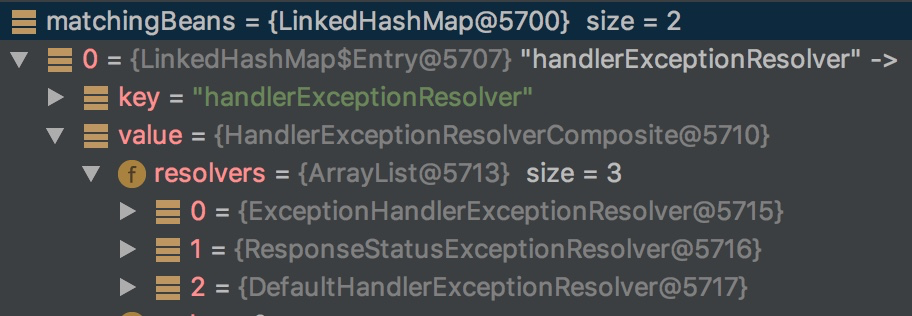
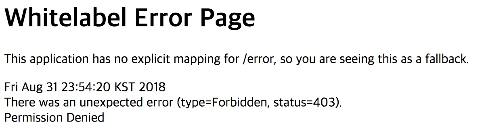

들어가며
Spring에서 제공하는 예외처리 방법에는 유용한 방법들이 몇가지 있다. Dispatcher Servlet내에서는 몇 가지 HandleExceptionResolver를 제공하여 예외 처리를 할 수 있도록 돕고 있다. 또한 @ControllerAdvice를 이용하여 Web Application 전역에 대한 Exception 처리를 위한 API를 제공한다. Spring 예외처리에 대한 내용과 간단한 사용법에 대한 포스팅을 작성하고자 한다.
예외(Exception) 처리는 어떻게?
Spring에서는 예외처리에 대해 강려크(?) 하게 지원해주고 있다.
- Controller 레벨에서 처리
- Global 레벨에서 처리
- HandlerExceptionResolver를 이용한 처리
Controller 레벨에서의 처리
Spring에서는 Controller에서 발생한 예외에 대해 Common하게 처리 할 수 있는 기능을 제공한다.
@ExceptionHandler 어노테이션을 통해 Controller의 메소드에서 throw된 Exception에 대한 공통적인 처리를 할 수 있도록 지원하고 있다.
예제 코드
1
2
3
4
5
6
7
8
9
10
11
12
13
14
15
16
17
18
19
20
21
22
23
24
25
26
27
28
29
30
31
32package com.example.springstudy.demo2.controller;
import com.example.springstudy.demo2.exception.DemoException;
import com.example.springstudy.demo2.exception.FilterException;
import com.example.springstudy.demo2.exception.InterceptorException;
import lombok.extern.slf4j.Slf4j;
import org.springframework.stereotype.Controller;
import org.springframework.web.bind.annotation.ExceptionHandler;
import org.springframework.web.bind.annotation.GetMapping;
4j
public class DemoController {
(path="/exception/demo")
public String occurDemoException() {
//강제로 DemoException을 발생 시켜 보았다.
throw new DemoException(); //occur DemoException (RuntimeException)
}
(path="/exception/demo2")
public String occurDemoException2() {
//강제로 DemoException을 발생 시켜 보았다.
throw new DemoException(); //occur DemoException (RuntimeException)
}
(value=DemoException.class)
public String handleDemoException(DemoException e) {
log.error(e.getMessage());
return "/error/404";
}
}
DemoController내에서 발생한 DemoException에 대해서는 handleDemoException 메소드에서 모두 처리를 해준다.
- Controller 메소드 내의 하위 서비스에서 Checked Exception이 발생하더라도, Controller 메소드 상위까지 예외를 throw 시키면
@ExceptionHandler어노테이션을 사용하여 Controller 전역적으로 예외처리가 가능하다. - Controller 메소드 내의 하위 서비스에서 Runtime Exception이 발생하면, 서비스를 호출한 최상위 Controller에서 해당 예외를 처리해준다.
Spring MVC 모델에서 예외처리를 미루고 미루면 이런식으로 Controller 레벨에서 예외처리를 Common하게 해줄 수 있다.
Global 레벨에서의 처리
만약 여러 Controller에서 같은 Exception이 발생하는 경우엔 어떻게 해야 할까?
위의 방식 처럼 Controller 별로 @ExceptionHandler 어노테이션이 붙은 메소드를 만들게 된다면, 중복코드가 양산 될 것이고 결국 유지보수의 비용이 증가하게 될 것이다.
Spring 에서는 이런 상황을 위해 Web Application 전역적으로 @ExceptionHandler를 사용할 수 있도록 지원한다.
@ControllerAdvice- Exception 처리 후 Error Page등을 통해 처리가 가능하다.@RestControllerAdvice- REST API에 대한 Exception 처리 등에 용이. (Default 데이터를 리턴 해 줄 수 있다.)
- @RestControllerAdvice = @ControllerAdvice + @ResponseBody
위 2개의 어노테이션을 이용하여 Web Application 전역적으로 @ExceptionHandler를 사용할 수 있다.
주의!) @ControllerAdvice로 케어 가능한 범위는 Dispatcher Servlet내에서 이루어진다는 것을 명심!!
예제 코드
1
2
3
4
5
6
7
8
9
10
11
12
13
14
15
16
17
18import com.example.springstudy.demo2.exception.DemoException;
import com.example.springstudy.demo2.exception.FilterException;
import com.example.springstudy.demo2.exception.InterceptorException;
import lombok.extern.slf4j.Slf4j;
import org.springframework.web.bind.annotation.ControllerAdvice;
import org.springframework.web.bind.annotation.ExceptionHandler;
4j
public class DemoControllerAdvisor {
//모든 Controller에서 일어나는 DemoException에 대해 전역적으로 예외처리
(value = DemoException.class)
public String handleDemoExceptionForGlobal(DemoException e) {
log.error(e.getMessage());
return "/error/404";
}
}
여기서 궁금한 점...
Controller 클래스 내에 @ExceptionHandler, @ControllerAdvice 클래스 내의 @ExceptionHandler 둘 중 뭐가 먼저 실행 될까? 그리고 둘 다 실행 될까?
실험을 해보았다. 준비물은 아래와 같다.
- DemoException을 throw하는 DemoController1, DemoController2
- DemoController1에서는 DemoException에 대해
@ExceptionHandler를 구현하였다. - DemoController2에서는 DemoException에 대한 예외처리를 별도로 하지 않았다.
- 전역적으로 DemoException에 대한 처리를 할 수 있는 DemoControllerAdvice 클래스를 생성하고
@ExceptionHandler를 통해 DemoException에 대한 예외 처리를 할 수 있도록 하였다.
Test-Case
- DemoController1 -> throw DemoException
- DemoController2 -> throw DemoException
어떤 결과가 나왔을까?
-
DemoController1 -> throw DemoException
- 예상대로 DemoController1 내의 @ExceptionHandler 메소드를 통해 우선적으로 예외처리가 되었다.
- 예외처리가 끝난 후 404페이지가 리턴 되었다.
@ControllerAdvice내의 @ExceptionHandler는 실행 되지 않았다.
=> @Controller내의 @ExceptionHandler로 예외처리를 하게 되면 거기서 예외처리가 끝난다. 더 상위로 Exception을 throw하더라도
@ControllerAdvice의 @ExceptionHandler에서 예외처리를 하지 않는다.
-
DemoController2 -> throw DemoException
- 예상대로 DemoControllerAdvice 내의
@ExceptionHandler메소드에서 예외처리가 되었다. - DemoController2에는
@ExceptionHandler가 없으므로 Controller레벨에서 예외처리가 되지는 않는다.
- 예상대로 DemoControllerAdvice 내의
HandlerExceptionResolver를 이용한 처리
HandlerExceptionResolver는 Controller의 작업 중에 발생한 예외를 어떻게 처리 할 지에 대한 전략이다.
DispatcherServlet이외의 영역에서 발생한 에러는 Servlet Container 내부에서 처리 될 것이다. 만약 error-page라도 잘 정의 했다면은 다행이겠지만, 그렇지 않다면 브라우져 화면에서 404, 500과 같은 에러 메세지를 표현 할 것이다.
(Spring boot의 경우 default로 white label page가 에러페이지로 설정 되어있다.)
HandlerExceptionResolver는 아래와 같은 인터페이스를 제공한다.
1
2
3
4
5
6
7
8
9
10package org.springframework.web.servlet;
import javax.servlet.http.HttpServletRequest;
import javax.servlet.http.HttpServletResponse;
import org.springframework.lang.Nullable;
public interface HandlerExceptionResolver {
ModelAndView resolveException(HttpServletRequest var1, HttpServletResponse var2, @Nullable Object var3, Exception var4);
}
DispatcherServlet내에서 예외 발생 시, resolverException 메소드를 구현한 HandlerExceptionResolver들이 실행 계획에 따라 처리 되며 예외를 처리 하게 된다. 사실 위에서 본 2가지 방식의 예외처리도 HandlerExceptionResolver를 이용한 예외 처리 방법이다. Spring에서 기본적으로 설정되어 있는 HandlerExceptionResolver에 대해 알아보도록 하겠다.
Dispatcher Servlet에 기본적으로 3개의 HandlerExceptionResolver가 등록 되어있다.
- ExceptionHandlerExceptionResolver
- ResponseStatusExceptionResolver
- DefaultHandlerExceptionResolver
순으로 Resolver가 실행된다.

ExceptionHandlerExceptionResolver
Spring 3.2때 AnnotationMethodHandlerExceptionResolver라는 이름으로 등장하였다. 현재는 Deprecated처리 되어 ExceptionHandlerExceptionResolver 클래스를 사용하고 있다.
위에서 사용한 @ExceptionHandler 어노테이션에 대한 Resolver 클래스이다.
ResponseStatusExceptionResolver
ResponseStatusExceptionResolver는 예외에 대한 Http 응답을 설정해 줄 수 있다. 특정 예외가 발생하였을 때 , 단순히 500 (internal-server-error) 대신 더 구체적인 응답 상태값을 전달 해 줄 수 있다.
사용 예제 (@ExceptionHandler와 함께 사용)
1
2
3
4
5
6
7
8//@ExceptionHandler 어노테이션과 함께 사용할 수 있다.
//구체적인 응답 코드를 줄 뿐 아니라, 간단한 사유도 전달 할 수 있다.
(value = HttpStatus.FORBIDDEN, reason = "Permission Denied")
(value=DemoException.class)
public String handleDemoException(DemoException e) {
log.error(e.getMessage());
return "/error/403";
}

위의 예제대로 실행 시, Fobidden(403) 응답 코드와 Permission Denied라는 응답 사유가 전달되었다. (403에 대한 페이지는 못만들었다 ^^;)
DefaultHandlerExceptionResolver
DispatcherServlet에 디폴트로 등록 된 3가지 HandlerExceptionResolver에서 예외처리를 하지 못하는 경우, 마지막으로 DefaultHandlerExceptionResolver에서 예외처리를 해준다.
DefaultHandlerExceptionResolver에서는 내부적으로 Spring 표준 예외처리를 해준다. 각 상황에 걸맞는 응답 코드를 리턴해 주는 역할을 한다.
- Request URL에 맞는 Controller를 못찾는 경우 ==> 404 Not Found
- Controller 메소드 실행 중 예외가 발생하는 경우 ==> 500 Internal Server error
- Controller의 파라미터 형식이 잘못된 경우 ==> 400 Bad Request
SimpleMappingExceptionResolver
SimpleMappingExceptionResolver는 web.xml에 error-page를 지정하는 것과 비슷한 처리를 할 수 있도록 해준다. Exception별로 error-page를 매핑할 수 있는 기능을 제공한다.
설정방법은 2가지로 설명하도록 하겠다.
- Java config 방식
1
2
3
4
5
6
7
8
9
10
11
12
13
14
15
16
17
public WebMvcConfig extends WebMvcConfigurerAdapter {
(name=“customMappingExceptionResolver”)
public SimpleMappingExceptionResolver customMappingExceptionResolver() {
SimpleMappingExceptionResolver r = new SimpleMappingExceptionResolver();
Properties mappings = new Properties();
mappings.setProperty("DatabaseException", "databaseError");
mappings.setProperty("DemoException", "demoError");
r.setExceptionMappings(mappings);
r.setDefaultErrorView("default-error-page");
r.setExceptionAttribute("ex");
return r;
}
}
- xml 방식
1
2
3
4
5
6
7
8
9
10<bean id="simpleMappingExceptionResolver" class="org.springframework.web.servlet.handler.SimpleMappingExceptionResolver">
<property name="exceptionMappings">
<map>
<entry key="DatabaseException" value="databaseError"/>
<entry key="DemoException" value="demoError"/>
</map>
</property>
<property name="defaultErrorView" value="error"/>
<property name="exceptionAttribute" value="ex"/>
</bean>
자, 이만하면은 Controller 내부에서 발생하는 Exception에 대해서는 어느정도 예외처리를 할 수 있게 되었다. 근데 DispatcherServlet 외부의 Filter에서 예외가 발생하면은 어쩌지?
다시 한번 Spring MVC를 보자 (자꾸 보게되네?)

Spring MVC의 대한 처리는 99프로가 Dispatcher Servlet에서 일어난다. 그렇기 때문에 Dispatcher Servlet 내부에서 발생한 Exception은 Dispatcher Servlet 내부에서 자체적으로 해결이 가능하다.
하지만, Dispatcher Servlet 이전에 Filter에서 Exception이 발생 할 경우 Dispatcher Servlet 내의 HandlerExceptionResolver의 처리를 받을 수 없다. 이럴때는 어떡할건가?
지금부터 Filter에 대한 예외처리 방법을 알아보도록 하겠다.
Filter에서 예외가 발생하면?
filter에서 예외가 발생하면 여태까지 말한 예외처리 방법이 적용되지 않는다. 왜냐? 실제 Dispatcher Servlet에서 처리하기도 전에 예외가 발생되기 때문이다.
Filter에서 예외가 발생하면 Web Application 레벨에서 처리를 해줘야 한다.
- web.xml에 error-page를 잘 등록해줘서 에러를 사용자에게 표현
- Filter 내부에서 try-catch 구문을 통해 예외 발생 시,
request.getRequestDispatcher(String)를 통해 어떻게든 Controller까지 예외를 보내서 처리하게 한다. (웬만하면 Filter보다는 Interceptor에서 로직을 처리하는 것이 예외처리가 쉽곘다. Interceptor는 DispatcherServlet 내부에서 실행되는 것이니 여태 얘기한 Spring에서 지원하는 예외처리 방법을 모두 사용할 수 있다.)
참조
https://spring.io/blog/2013/11/01/exception-handling-in-spring-mvc https://www.journaldev.com/2651/spring-mvc-exception-handling-controlleradvice-exceptionhandler-handlerexceptionresolver http://www.nextree.co.kr/p3239/ http://springsource.tistory.com/7 http://stewie38.tistory.com/59 https://supawer0728.github.io/2018/04/04/spring-filter-interceptor/